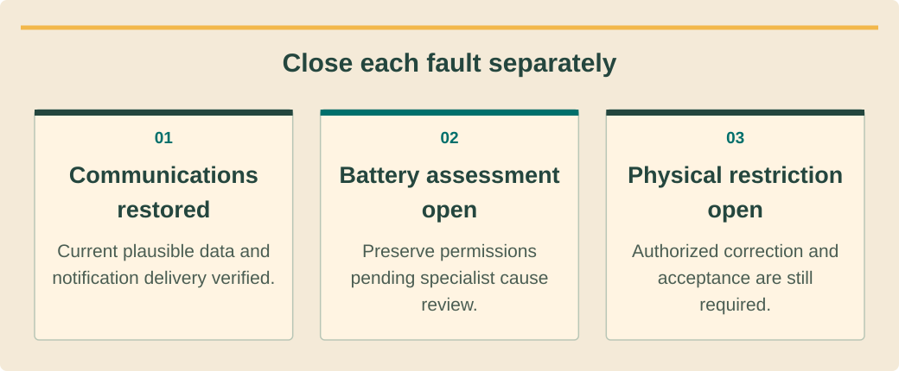

Commissioning, technical service and O&Mהפעלה, שירות טכני ותחזוקהการทดสอบส่งมอบ บริการเทคนิค และบำรุงรักษา · 9 / 9
Supervised multi-fault service capstoneמשימת שירות מסכמת בפיקוח למספר תקלותภารกิจบริการหลายเหตุสรุปภายใต้การดูแล
Integrate triage, diagnosis, controlled repair and accountable return to service.לשלב מיון, אבחון, תיקון מבוקר וחזרה אחראית לשירות.รวมคัดแยก วินิจฉัย ซ่อมควบคุม และคืนระบบรับผิดชอบ.
What you will be able to doמה תדעו לעשותสิ่งที่คุณจะทำได้
- Build separate fault trees from a mixed complaint.לבנות עצי תקלה נפרדים מתלונה מעורבת.ทำผังเหตุแยกจากคำร้องปน.
- Prioritize physical hazards over production recovery.לתעדף סכנה פיזית לפני חזרת ייצור.จัดอันตรายกายภาพก่อนฟื้นผลิต.
- Defend evidence-based repair and monitoring closure.לנמק תיקון וסגירת ניטור מבוססי ראיות.อธิบายซ่อมและปิดติดตามด้วยหลักฐาน.
The resort dossierתיק הריזורטแฟ้มรีสอร์ต
Every detail is invented for assessment. A resort reports “solar and backup stopped after the storm.” Its dossier contains an accepted circuit map, equipment identities, timestamped logs and safe-location photographs. The assessor provides isolated training equipment; no learner is authorized to operate an unknown live system through this exercise.הכול מדומה להערכה. ריזורט מדווח ״סולאר וגיבוי נעצרו אחרי סערה״. בתיק מפת מעגל, מזהי ציוד, יומנים וצילומים ממיקום בטוח. הבוחן מספק ציוד מבודד; התרגיל אינו מתיר הפעלת מערכת חיה לא מוכרת.ทั้งหมดสมมติเพื่อประเมิน รีสอร์ตแจ้ง “โซลาร์และสำรองหยุดหลังพายุ” แฟ้มมีผังรับแล้ว รหัสเครื่อง บันทึกเวลา และภาพจากจุดปลอดภัย ผู้ประเมินให้ชุดฝึกแยกพลังงาน แบบฝึกไม่ให้สิทธิ์ควบคุมระบบมีไฟไม่ทราบ.
The evidence deliberately mixes three issues: monitoring ceased after a router change; BMS logs show charge inhibition with a temperature event; a photograph shows water staining and damaged cable support near equipment. Your task is to separate these findings without assuming a single cause explains every symptom.הראיות מערבבות שלושה נושאים: ניטור נעצר אחרי שינוי נתב; BMS מציג מניעת טעינה ואירוע טמפרטורה; צילום מראה סימני מים ותמיכת כבל פגומה. מפרידים ממצאים בלי להניח סיבה אחת לכל תסמין.หลักฐานปนสามเรื่อง ติดตามหยุดหลังเปลี่ยนเราเตอร์ BMS ห้ามชาร์จพร้อมเหตุอุณหภูมิ และภาพมีคราบน้ำกับรองรับสายเสียใกล้เครื่อง งานคือแยกข้อพบโดยไม่สมมติสาเหตุเดียวอธิบายทุกอาการ.
Triage before diagnosisמיון לפני אבחוןคัดแยกก่อนวินิจฉัย
Start with the potential physical hazard and the site’s authorized response process. Preserve safe observations and keep access restrictions visible. A plausible communication explanation does not release equipment with unresolved water or support damage, and a restored dashboard does not close those physical findings.מתחילים בסכנה פיזית ובתגובה מורשית. שומרים תצפיות והגבלות גישה. הסבר תקשורת סביר אינו משחרר ציוד עם מים או תמיכה פגומה, ולוח שחזר אינו סוגר ליקויים פיזיים.เริ่มอันตรายกายภาพกับกระบวนการตอบที่อนุญาต เก็บสิ่งเห็นและข้อจำกัดเข้า คำอธิบายสื่อสารที่เป็นไปได้ไม่ปล่อยเครื่องมีน้ำหรือรองรับเสีย และแดชบอร์ดกลับไม่ปิดข้อพบนั้น.
Build a timeline that preserves the original timestamps and time zones. Mark observed events, customer reports and your interpretations differently. The router change may explain the data gap, but temporal association is only a hypothesis until the communication chain is verified.בונים ציר זמן עם שעות ואזורים מקוריים. מסמנים אחרת אירוע נצפה, דיווח ופרשנות. שינוי נתב עשוי להסביר פער, אך סמיכות היא השערה עד אימות שרשרת.ทำเส้นเวลาด้วยเวลาและเขตเดิม แยกเหตุสังเกต รายงานลูกค้า และตีความ เปลี่ยนเราเตอร์อาจอธิบายข้อมูลหาย แต่เวลาใกล้เป็นสมมติฐานจนตรวจห่วงโซ่สื่อสาร.
See the ideaרואים את הרעיוןมองเห็นแนวคิด
Close each fault separatelyלסגור כל תקלה בנפרדปิดแต่ละเหตุแยกกัน

Read the diagram as textקריאת התרשים כטקסטอ่านแผนภาพเป็นข้อความ
- Communications restoredתקשורת חזרהสื่อสารกลับแล้ว — Current plausible data and notification delivery verified.אומתו נתונים סבירים עדכניים ומסירת הודעות.ยืนยันข้อมูลสดสมเหตุผลและส่งเตือน.
- Battery assessment openבדיקת מצבר פתוחהประเมินแบตยังเปิด — Preserve permissions pending specialist cause review.שומרים הרשאות עד בדיקת סיבה מקצועית.คงสิทธิ์รอผู้เชี่ยวชาญตรวจเหตุ.
- Physical restriction openהגבלה פיזית פתוחהข้อจำกัดกายภาพเปิด — Authorized correction and acceptance are still required.עדיין דרושים תיקון וקבלה מורשים.ยังต้องแก้และรับที่อนุญาต.
Produce three evidence pathsליצור שלושה מסלולי ראיותทำสามทางหลักฐาน
For communication, define the last valid observation and the evidence needed to establish fresh data. For the battery, distinguish charge permission from discharge permission and preserve the temperature/event sequence. For the physical defect, assign the competent assessment and acceptance evidence required before any affected release.לתקשורת מגדירים תצפית תקפה אחרונה וראיה לנתון חדש. למצבר מפרידים טעינה מפריקה ושומרים רצף טמפרטורה. לליקוי הפיזי מקצים הערכה וראיית קבלה לפני שחרור.สื่อสารระบุค่าถูกสุดท้ายกับหลักฐานข้อมูลสด แบตแยกสิทธิ์ชาร์จ/คายและเก็บลำดับอุณหภูมิ ข้อบกพร่องกายภาพระบุผู้ประเมินกับหลักฐานรับก่อนปล่อยส่วนกระทบ.
Write each proposed intervention with its purpose, authority, prerequisites and expected result. Do not merge all fixes into an uncontrolled update or reset. Preserve the pre-change state so the assessor can see which evidence supports each conclusion and which uncertainty remains after the action.כותבים לכל התערבות מטרה, סמכות, תנאים וצפי. לא מאחדים לעדכון או איפוס לא מבוקר. שומרים מצב קודם כדי שהבוחן יראה ראיה לכל מסקנה וספק שנותר.เขียนแต่ละการแก้พร้อมเป้าหมาย สิทธิ์ เงื่อนไข และผลคาด อย่ารวมเป็นอัปเดตหรือรีเซ็ตไร้ควบคุม เก็บก่อนเปลี่ยนให้ผู้ประเมินเห็นหลักฐานแต่ละข้อสรุปและความไม่แน่ใจที่เหลือ.
Demonstrate and defend closureלהדגים ולנמק סגירהสาธิตและอธิบายการปิด
The human assessor observes an isolated diagnostic or inspection task and a verbal handover. The rubric checks safe boundaries, competing hypotheses, traceability, model-specific reasoning and verified acceptance. Any critical unsafe action or proposed protective bypass stops the practical assessment and requires corrective learning before a new attempt.בוחן אדם צופה באבחון או בדיקה מבודדים ובמסירה. המחוון בודק גבולות, השערות, עקיבות, דגם וקבלה. פעולה מסוכנת קריטית או הצעת עקיפה עוצרות הערכה ודורשות למידה לפני ניסיון חדש.ผู้ประเมินคนสังเกตงานวินิจฉัย/ตรวจแยกพลังงานกับส่งมอบปากเปล่า เกณฑ์ดูขอบเขต สมมติฐาน ร่องรอย เหตุผลตามรุ่น และรับยืนยัน การอันตรายสำคัญหรือเสนอข้ามป้องกันหยุดประเมินและต้องเรียนแก้ก่อนใหม่.
Your final report must separate resolved, unverified and restricted items. Give the property contact a clear next action and responsible owner for each open issue, plus the monitoring follow-up that will confirm recovery. Knowledge-quiz success alone is not practical competence, Thai professional licensing or permission to energize.הדוח מפריד נפתר, לא אומת ומוגבל. נותנים לנציג פעולה ואחראי לכל פתוח ומעקב שיאשר התאוששות. בוחן ידע לבדו אינו כשירות מעשית, רישוי תאילנדי או היתר מתח.รายงานท้ายแยกแก้แล้ว ยังไม่ยืนยัน และจำกัด ให้ผู้ติดต่อรู้ขั้นถัดไปกับเจ้าของทุกข้อค้าง พร้อมติดตามยืนยันฟื้น ผ่านข้อสอบอย่างเดียวไม่ใช่สมรรถนะปฏิบัติ ใบอนุญาตไทย หรือสิทธิ์จ่ายไฟ.
Worked exampleדוגמה פתורהตัวอย่างพร้อมวิธีทำ
Partial recovery is not full closureהתאוששות חלקית אינה סגירה מלאהฟื้นบางส่วนไม่ใช่ปิดทั้งหมด
Invented assessor update: communications are restored with current timestamps, but battery cause assessment and physical damage acceptance are still outstanding.עדכון בוחן מדומה: תקשורת חזרה עם שעות נוכחיות אך סיבת מצבר וקבלת נזק פתוחות.อัปเดตผู้ประเมินสมมติ สื่อสารกลับมีเวลาปัจจุบัน แต่สาเหตุแบตกับรับความเสียหายยังค้าง.
- Close only the communication fault after confirming plausible current data and notification delivery.סוגרים רק תקשורת אחרי נתון סביר ומסירת הודעה.ปิดเฉพาะสื่อสารหลังยืนยันข้อมูลสดสมเหตุผลและส่งเตือน.
- Keep battery permissions intact and preserve the specialist review requirement.שומרים הרשאות מצבר ודרישת בדיקת מומחה.คงสิทธิ์แบตและข้อกำหนดผู้เชี่ยวชาญตรวจ.
- Retain physical restrictions until authorized correction and acceptance are recorded.שומרים הגבלה פיזית עד תיקון וקבלה מתועדים.คงข้อจำกัดกายภาพจนแก้และรับอนุญาตมีบันทึก.
The service record shows one resolved path and two open paths instead of an inaccurate whole-system pass.רישום מציג מסלול אחד סגור ושניים פתוחים ולא מעבר כוזב לכל המערכת.บันทึกแสดงหนึ่งทางแก้แล้วสองทางเปิด ไม่ผ่านทั้งระบบอย่างคลาดเคลื่อน.
Your turnעכשיו מתרגליםถึงเวลาฝึกฝน
Independent restaurant caseמקרה מסעדה נפרדกรณีร้านอาหารแยก
Invented exercise: a restaurant has short backup runtime, increased kitchen load and repeated EV charging reductions after a meter change. No immediate hazard is reported.תרגיל מדומה: מסעדה עם גיבוי קצר, עומס מטבח גדל והפחתות טעינה אחרי החלפת מד. אין סכנה מיידית מדווחת.แบบฝึกสมมติ ร้านอาหารสำรองสั้น โหลดครัวเพิ่ม และ EV ลดซ้ำหลังเปลี่ยนมิเตอร์ ไม่มีรายงานอันตรายทันที.
- Draft two independent hypotheses and evidence requests.לנסח שתי השערות ובקשות ראיות נפרדות.ร่างสองสมมติฐานกับคำขอหลักฐานแยก.
- Define acceptance without promising a replacement.להגדיר קבלה בלי להבטיח החלפה.กำหนดรับโดยไม่สัญญาเปลี่ยน.
Compare with the model answerהשוו לפתרון לדוגמהเปรียบเทียบกับแนวคำตอบ
For runtime, compare usable energy, starting charge, reserve and the changed load. For EV behavior, verify meter identity, phase mapping and approved control settings. A load increase may explain runtime and a measurement change may affect charging, but each needs evidence; retain limits and verify the expected behavior after any authorized correction.לזמן משווים אנרגיה, טעינה התחלתית, רזרבה ועומס. לרכב מאמתים מד, פאזות ובקרה. עומס עשוי להסביר זמן ושינוי מד טעינה, אך כל אחד דורש ראיה; שומרים גבולות ומאמתים תגובה לאחר תיקון.เรื่องเวลาเทียบพลังงานใช้ได้ ประจุเริ่ม สำรอง และโหลดเปลี่ยน EV ตรวจรหัสมิเตอร์ ผังเฟส และค่าอนุมัติ โหลดเพิ่มอาจอธิบายเวลาและวัดเปลี่ยนอาจกระทบชาร์จ แต่ต้องหลักฐานแต่ละทาง คงขีดและยืนยันผลหลังแก้อนุญาต.
Your exercise notebookמחברת התרגול שלכםสมุดแบบฝึกหัดของคุณ
Write your reasoning and the evidence you would collect. Notes stay in this browser. Export a copy to share with your trainer.כתבו את דרך החשיבה ואת הראיות שתאספו. המחברת נשמרת בדפדפן הזה. הורידו עותק כדי להעביר לבדיקה של אחראי ההדרכה.เขียนเหตุผลและหลักฐานที่จะรวบรวม บันทึกเก็บในเบราว์เซอร์นี้ ส่งออกสำเนาเพื่อส่งให้ผู้ฝึกสอนตรวจ
Before handing overלפני שמעבירים הלאהก่อนส่งมอบงาน
- Hazard response precedes recovery pressure.תגובת סכנה לפני לחץ התאוששות.ตอบอันตรายก่อนแรงกดดันฟื้น.
- Each conclusion has separate evidence.לכל מסקנה ראיות נפרדות.ทุกข้อสรุปมีหลักฐานแยก.
- Human assessment and open restrictions recorded.הערכת אדם והגבלות פתוחות תועדו.บันทึกประเมินคนและข้อจำกัดค้าง.
Watch and applyצופים ומיישמיםดูแล้วนำไปใช้
A professional demonstrationהדגמה מקצועיתการสาธิตจากผู้เชี่ยวชาญ
Before pressing playלפני שמפעיליםก่อนกดเล่น
Identify why different commissioning and maintenance questions require different forms of measurement evidence.זהו מדוע שאלות הפעלה ותחזוקה שונות דורשות ראיות מדידה שונות.ระบุว่าทำไมคำถามส่งมอบกับบำรุงต่างกันต้องใช้หลักฐานวัดต่างกัน.
Tools and Techniques for Commissioning and Maintaining PV Systems
English webinar presented by Fluke Solar Application Specialist Will White, hosted by Test Equipment Depot. Covers measurement categories, commissioning and O&M. US examples and demonstrated procedures require local and model-specific review.וובינר באנגלית של מומחה הסולאר ב-Fluke, Will White, באירוח Test Equipment Depot. עוסק בקטגוריות מדידה, הפעלה ותחזוקה. דוגמאות אמריקאיות ונהלים מחייבים בדיקת תחולה מקומית ודגם.เว็บบินาร์ภาษาอังกฤษโดย Will White ผู้เชี่ยวชาญโซลาร์ Fluke จัดโดย Test Equipment Depot ครอบคลุมประเภทวัด ทดสอบส่งมอบ และ O&M ตัวอย่างสหรัฐฯ และวิธีต้องตรวจท้องถิ่นกับรุ่น.
Connect it to this lessonמחברים לחומר בשיעורเชื่อมกับบทเรียนนี้
A service capstone succeeds by demonstrating defensible closure and preserving unresolved holds.הצלחת משימת שירות דורשת סגירה מנומקת ושמירת עצירות שלא נפתרו.ภารกิจบริการสำเร็จด้วยปิดมีหลักฐานและคงพักที่ยังไม่แก้.
Pause and explainעוצרים ומסביריםหยุดแล้วอธิบาย
Which evidence is still missing after communications return in the assessor’s case?איזו ראיה עדיין חסרה לאחר חזרת התקשורת במקרה הבוחן?หลังสื่อสารกลับในกรณีผู้ประเมินยังขาดหลักฐานใด?
The guidance is available in all three languages. The video keeps the publisher’s original audio; captions and translations depend on the publisher and YouTube. If the embedded player is unavailable, use the source link.הנחיות הצפייה זמינות בשלוש השפות. הסרטון נשאר בשפת המקור; כתוביות ותרגום תלויים במפרסם וב־YouTube. אם הנגן אינו זמין, פתחו את קישור המקור.คำแนะนำมีครบสามภาษา วิดีโอใช้เสียงต้นฉบับ คำบรรยายและการแปลขึ้นกับผู้เผยแพร่และ YouTube หากเครื่องเล่นใช้ไม่ได้ให้เปิดลิงก์ต้นฉบับ
Check your understanding · 80% to passבדיקת הבנה · ציון מעבר 80%ตรวจความเข้าใจ · ผ่านที่ 80%
Sources and review datesמקורות ותאריכי בדיקהแหล่งข้อมูลและวันที่ตรวจสอบ
- VRM alarms and monitoring
VRM communication/alarms example; notifications are not emergency protective equipment.דוגמת תקשורת והתראות VRM; הודעות אינן ציוד הגנת חירום.ตัวอย่างการสื่อสารและเตือนของ VRM การแจ้งเตือนไม่ใช่อุปกรณ์ป้องกันฉุกเฉิน
- Lithium NG system design/BMS guide
Lithium NG 25.6V family/BMS compatibility and permissions; not generic lithium thresholds or bypass instructions.תאימות והרשאות BMS למשפחת Lithium NG 25.6V; לא ספי ליתיום כלליים או הוראות עקיפה.ความเข้ากันได้และสิทธิ์ BMS ของ Lithium NG 25.6V ไม่ใช่เกณฑ์ลิเทียมทั่วไปหรือวิธีข้ามการป้องกัน
- Operate and maintain an existing PV system
US lifecycle/O&M guidance; adapt weather and service planning to the actual island property.הנחיות מחזור חיים ותחזוקה מארה״ב; יש להתאים מזג אוויר ותכנון שירות לנכס באי.แนวทางวงจรชีวิตและบำรุงรักษาจากสหรัฐฯ ปรับแผนอากาศและบริการให้ตรงอาคารบนเกาะจริง
- PV and energy-storage O&M best practices
Historic 2018 PV/storage O&M guide; not current Thai law or a substitute for equipment manuals.מדריך תחזוקת סולאר ואגירה משנת 2018; אינו חוק תאילנדי עדכני או תחליף למדריכי ציוד.คู่มือบำรุงรักษา PV/กักเก็บปี 2018 ไม่ใช่กฎหมายไทยปัจจุบันหรือคู่มืออุปกรณ์แทน
- MultiPlus-II 230V configuration
Configuration for MultiPlus-II 230V; approved settings and authorized change control remain project-specific.הגדרת MultiPlus-II 230V; הגדרות מאושרות ובקרת שינויים מורשית תלויות פרויקט.การตั้งค่า MultiPlus-II 230V ค่าที่อนุมัติและสิทธิ์เปลี่ยนแปลงขึ้นกับโครงการ
- IEC 62446-1 commissioning/documentation scope
Public scope for PV commissioning, inspection and documentation; obtain applicable full procedures and limits.היקף ציבורי להפעלה, בדיקה ותיעוד סולאר; נדרשים נהלים וגבולות מלאים החלים בפרויקט.ขอบเขตสาธารณะสำหรับทดสอบ ตรวจ และจัดเอกสาร PV ต้องใช้ขั้นตอนและเกณฑ์ฉบับเต็มที่เกี่ยวข้อง
- IEC 62446-2 maintenance scope
Maintenance scope, not a universal inspection or cleaning interval.היקף תחזוקה, לא מרווח בדיקה או ניקוי אחיד.ขอบเขตการบำรุงรักษา ไม่ใช่ช่วงเวลาตรวจหรือทำความสะอาดที่ใช้ได้ทุกระบบ
Reading and quizzes build knowledge. Field work and practical sign-off require the responsible qualified professional.קריאה וחידונים בונים ידע. עבודת שטח ואישור כשירות מעשית נעשים בהנחיית בעל המקצוע המוסמך והאחראי.การอ่านและแบบทดสอบสร้างความรู้ งานภาคสนามและการรับรองความสามารถปฏิบัติต้องอยู่ภายใต้ผู้เชี่ยวชาญที่มีคุณสมบัติและรับผิดชอบ